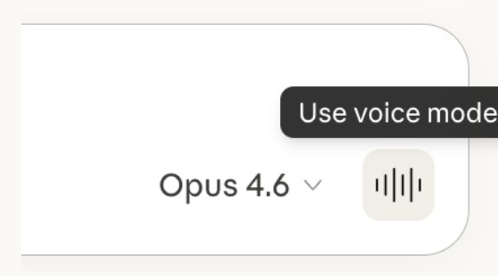

Fyra saker att göra först
Ska du börja använda Claude eller ChatGPT för första gången? Det här är allt jag skulle börja med. Fyra saker, och båda prompterna jag pratar om i videon. Skillnaden mellan verktygen är liten, så stegen fungerar i båda.
De fyra sakerna
Använd datorappen, inte webbläsaren
Båda finns som app för datorn, och det är där de kan börja göra uppgifter åt dig i stället för att bara svara. Ladda ner Claude på claude.com/download och tryck på Download (1). Sidan visar knappen för just din dator, Windows eller Mac.

ChatGPT laddar du ner på chatgpt.com/download. I appen kan du ge den en uppgift som går över flera av dina verktyg på en gång.

Ge AI:n så mycket kontext om dig som möjligt
Klistra in prompten nedan i en ny chatt och skicka den. AI:n förstår då att den ska lära känna dig och ställa frågor.

I want you to get to know me so you can help me better in every future chat. In a moment I will switch to voice mode and talk freely about myself, my job and what I need help with. While I talk, ask me follow-up questions, one at a time, until you have a clear picture of: - who I am: background, interests and how I like to communicate - my job: my role, company, industry, customers, the tools I use and what a normal week looks like - what I want help with: recurring tasks, goals and what slows me down When you have enough, tell me, and create two separate documents: 1. "Om mig": who I am and how I want you to work with me. 2. "Mitt jobb": my role, my work, my tools and what I need help with. Write both documents as clear bullet points, in Swedish, so I can paste them into any AI tool. Talk to me in Swedish.
Öppna sedan Voice Mode, ljudvågsknappen nere till höger i textrutan, och prata. Berätta om dig, ditt jobb och allt du behöver hjälp med, och svara på frågorna den ställer.

När samtalet är klart får du två filer, en om dig och en om ditt jobb. Spara dem. I stället för att förklara vem du är varje gång lägger du in filerna i ett projekt, eller laddar upp dem i början av en ny chatt.
Koppla verktygen du använder varje dag
Mejl, kalender, Slack, Excel och allt annat du jobbar i. När verktygen är kopplade kan AI:n läsa och göra saker direkt i dem.
I Claude ligger det under Connectors. Snabbast dit är plustecknet (1) vid textrutan, sedan Connectors (2) och Manage connectors (3). Där slår du på verktygen ett i taget.

I ChatGPT heter det plugins. Där kopplar du verktygen du vill ha, och sedan skriver du @ i textrutan för att använda dem.

Lär AI:n att skriva exakt som du
Det här är det viktigaste. När AI:n vet hur du skriver låter allt den skriver åt dig som du.
I ChatGPT slår du på writing style. Du hittar det under Settings och Personalization. Där kopplar du vilka verktyg den får läsa, meddelanden, dokument och mejl, och ChatGPT går själv igenom hur du skriver. Funktionen finns i de betalda planerna.

I Claude gör du samma sak, men lite mer för hand. Klistra in prompten nedan. Claude går igenom verktygen du kopplade i steg 3, tittar på hur du skriver mejl, meddelanden och texter, och gör det till en skill som den använder varje gång den skriver något åt dig.
Go through the tools I have connected (for example Gmail, Slack, Google Drive and Notion) and find at least 20 texts that I have written myself: emails, messages, documents and articles. Only use texts I wrote, not texts I received. Analyze how I write: tone, sentence length, greetings and sign-offs, words and phrases I use often, words I never use, how I structure longer texts, and how I write differently in email, chat and longer documents. Then turn this into a skill called "min-skrivstil" with clear rules and a few short examples of my own wording, so you use it every time you write something for me. Show me a summary of the rules before you save the skill.

Gör det en gång, ordentligt
De här fyra sakerna gör du en gång. Efter det slipper du förklara vem du är, klistra in samma bakgrund om och om igen, eller skriva om det AI:n skrev för att det inte lät som du. En timme nu sparar dig den tiden i varje chatt efteråt.
Vill du lära dig AI, eller veta om ditt företag kan använda det?
Jag hjälper dig komma igång, från första frågan till färdig rutin. Hör av dig så tar vi reda på om och var AI passar för dig eller ditt företag.
Boka ett strategisamtal